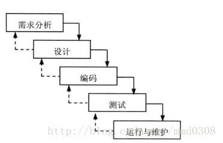
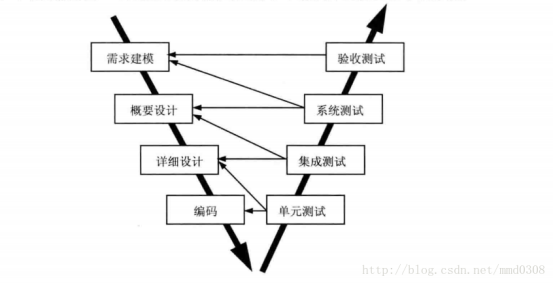
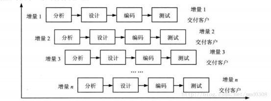
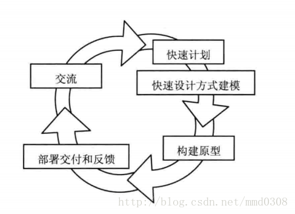
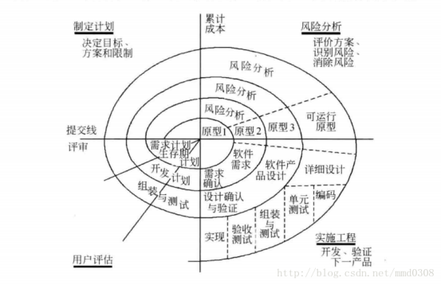
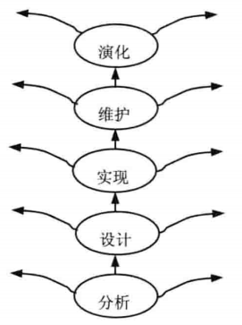
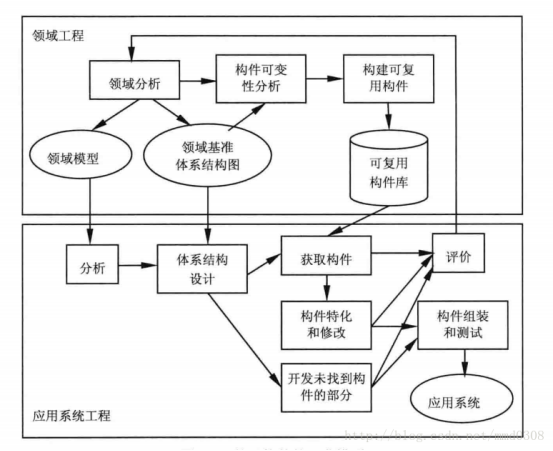

软件过程模型
软件过程模型习惯上也称为软件开发模型，它是软件开发全部过程、活动和任务的结构框架。
瀑布模型：
瀑布模型是将软件生存周期中的各个活动规定为依线性连接的若干阶段的模型，包括需求分析、设计、编码、测试、运行与维护。由前至后、相互衔接的固定次序，如同瀑布流水逐级下落。

瀑布模型是以文档作为驱动、适合于软件需求很明确的软件项目的模型。
V模型
V模型是瀑布模型的一个变体。V模型提供了一种将验证确认活动应用于早期软件工程工作中的方法。

瀑布模型的优点：
容易理解，管理成本低。
强调开发的阶段性早期计划及需求调查和产品测试。
瀑布模型的缺点：
客户必须能够完整、正确和清晰地表达他们的需要
开始2个或3个阶段，很难评估真正的进度。
项目结束时，出现大量的集成和测试工作。
需求或设计中的错误往往只有到了项目后期才能够被发现，对于项目风险的控制能力较弱，从而导致项目常常延期完成，开发费用超出预算。
增量模型：
增量模型融合了瀑布模型的基本成分和原型实现的迭代特征，它假设可以将需求分段为一系列增量产品，每一增量可以分别开发。

使用增量模型，第1个增量往往是核心的产品。客户对每个增量的使用和评估都作为下一个增量发布的新特征和功能，这个过程在每一个增量发布后不断重复，直到产生了最终的完善产品。增量模型强调每一个增量均发布一个可操作的产品。
增量模型的优点：
容易理解，管理成本低。
强调开发的阶段性早期计划及需求调查和产品测试。
第一个可交付版本所需要的成本和时间很少。
开发由增量表示的小系统所承担的风险不大。
减少用户需求的变更。
运行增量投资，即在项目开始时，可以仅对一个或两个增量投资。
增量模型的缺点：
如果没有对用户的变更需求进行规划，那么产生的初始增量可能会造成后来增量的不稳定。
如果需求不想早期思考的那样稳定和完整，那么一些增量就可能需要重新开发，重新发布。
管理发生的成本、进度和配置的复杂性可能会超出组织的能力。
演化模型：
演化模型是迭代的过程模型，使得软件开发人员能够逐步开发出更完整的软件版本。演化模型特别适用于对软件需求缺乏准确认识的情况。典型的演化模型有原型模型和螺旋模型等。
演化模型之原型模型：
原型是预期系统的一个可执行版本，反映了系统性质的一个选定的子集。一个原型不必满足目标软件的所有约束，其目的是能快速、低成本地构建原型。

原型模型开始于沟通，其目的是定义软件的总体目标，标识需求，然后快速制定原型开发的计划，确定原型的目标和范围，采用快速射击的方式对其进行建模，并构建原型。
根据原型的目的，可分为三种：
探索型原型：目的是弄清目标的要求，确定所希望的特性，并探讨多种方案的可行性。
实验型原型：目的是验证方案或算法的合理性，是在大规模开发和实现前，用于考查方案是否合适、规格说明是否可靠等。
演化型原型：目的是将原型作为目标系统的一部分，通过对原型的多次改进，逐步将原型演化成最终的目标系统。
演化模型之螺旋模型：
螺旋模型将瀑布模型和演化模型结合起来，加入了两种模型均忽略的风险分析，弥补了这两种模型的不足。
螺旋模型将开发过程分为几个螺旋周期，每个螺旋周期大致和瀑布模型相符合：
制定计划：确定软件的目标，选定实施方案，明确项目开发的限制条件。

风险分析：分析所需的方案，识别风险，消除风险。
实施工程：实施软件开发，验证阶段性产品。
用户评估：评价开发工作，提出修正建议，建立下一个周期的开发计划。
螺旋模型强调风险分析，使得开发人员和用户对每个演化层出现的风险有所了解，从而做出应有的反应。因此，该模型特别适用于庞大、复杂并且具有高风险的系统。
螺旋模型和瀑布模型比较：
螺旋模型支持用户需求的动态变化，为用户参与软件开发的所有关键决策提供了方便，有助于提高软件的适应能力，并且为项目管理人员及时调整管理决策提供了便利，从而降低了软件开发的风险。在使用螺旋模型进行软件开发时，需要开发人员具有相当丰富的风险评估经验和专门知识。另外，过多的迭代次数会增加开发成本，延迟提交时间。
喷泉模型：
喷泉模型是一种以用户需求为动力，以对象作为驱动的模型，适合于面向对象的开发方法。它克服了瀑布模型不支持软件重用和多项开发活动集成的局限性。喷泉模型使开发过程具有迭代性和无间隙性。

优点：
提高软件项目的开发效率，节省开发时间。
缺点：
开发阶段是重叠的，开发过程中需要大量的开发人员，不利于项目的管理。
需要严格的管理文档，使得审核的难度加大。
基于构件的开发模型:
基于构件的开发是指利用预先包装的构件来构造应用系统。基于构件的开发模型具有许多螺旋模型的特点，它本质上是演化模型，需要以迭代方式构建软件。
基于构件的开发模型，包括领域工程和应用系统工程两部分。

领域工程的目的是构建领域模型、领域基准体系结构和可复用构件库。
应用系统工程的目的是使用可复用构件组装应用系统。
形式化方法模型：
形式化方法是建立在严格数学基础上的一种软件开发方法，其主要活动是生成计算机软件形式化的数学规格说明。
形式化方法用严格的数学语言和语义描述功能规约和设计规约，通过数学的分析和推导，易于发现需求的歧义性、不完整性和不一致性，易于对分析模型、设计模型和程序进行验证。这种方法的一个变型是净室软件工程。